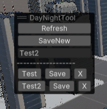

Lighting quick change Tool
Info
- This tool was also created for a group project, the same one I made the original Shatter tool for, This time the planners wanted a tool to quickly switch lighting render parameters so they could switch from "day" light to "night" light quickly.
- To show the tool:open the overlay menu and check "DayNightTool", in the open tool window, create as many configuration as you need by writing a name and clicking the SaveNew button, once its created, change any parameter you want in lighting settings and save. You can now easily switch between light settings by clikcking on the names available.

The code
Uses C# to save the configuration file and apply it, I made the UI using Unity's overlay feature.You can find the source code on my GitHub